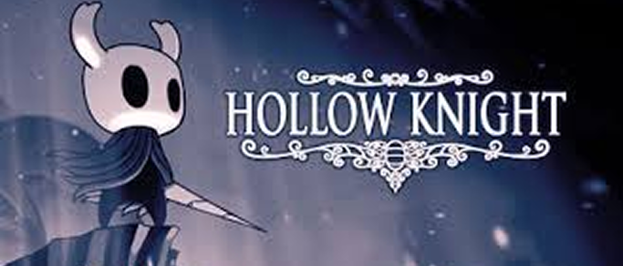

Walkthrough.
From Dirtmouth to Deepnest, IGN's Hollow Knight Wiki Guide and Walkthrough contains all the information you'll need to make your way throughout each section within the game. For strategies on how to beat the major enemy encounters in Hollow Knight, be sure to check out the Bosses section, and if Collectibles are what you crave, be sure to visit our pages on Charms, Spells, Mask Shards, and more. You can also check them off the list at the end of each page! Important items are also checklisted in the walkthrough.
Levels in Order of Difficulty:
 The Dark Forest. Difficulty: High
One of the most difficult areas due to obstacles in the form of traps, challenging enemies, and demanding platforms.

The Kingdom of Dreams

Difficulty: Very High The final stage of the game, where the bosses and enemies are extremely powerful. It is also filled with traps and complex obstacles. The difficulty of the final bosses, such as Nightmare King Grimm and Absolute Radiance, is monumental. The Dream Realm consists of numerous dreams which vary depending on the being or landscape they are rooted to. Dreams can take the shape of those who have passed away, such as Spirits, or dreams can form based on memories.[5][3] Furthermore, dreams also appear in plants known as Whispering Roots, which can be found all over the kingdom.[6] Essence are the fragments of light that dreams are made of.[7] Nightmare Essence, or "flame", is unique to the Nightmare Realm and their Troupe.[8] This type of Essence manifests itself into flames which are gathered for the ritual.[9]